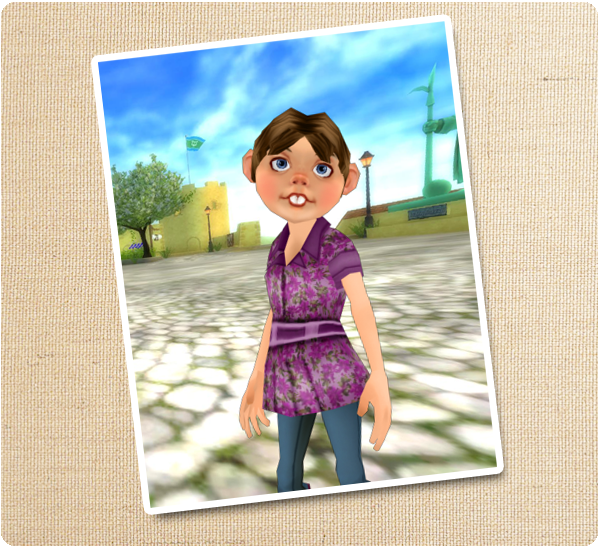

Sziasztok!
A halloweeni ünnepségek véget értek, és itt az ideje új izgalmas kalandoknak!
Új küldetés:
Gretchen eltűnt, és apja, Günther nagyon aggódik. Lovagolj el a Pinta erődbe, beszélj vele, és nézd meg, tudsz-e segíteni neki megtalálni a lányát! Könnyű eltévedni a szigeten...

Új ruhák:
Új ruhák érkeztek Silverglade faluba! A ruhák nagyon menők, és zászlók ihlették őket!
Új lábszárvédők:
Új lábszárvédők érkeztek Silverglade faluba! Ezek a menő lábszárvédők könnyen kombinálhatók az új ruhákkal!